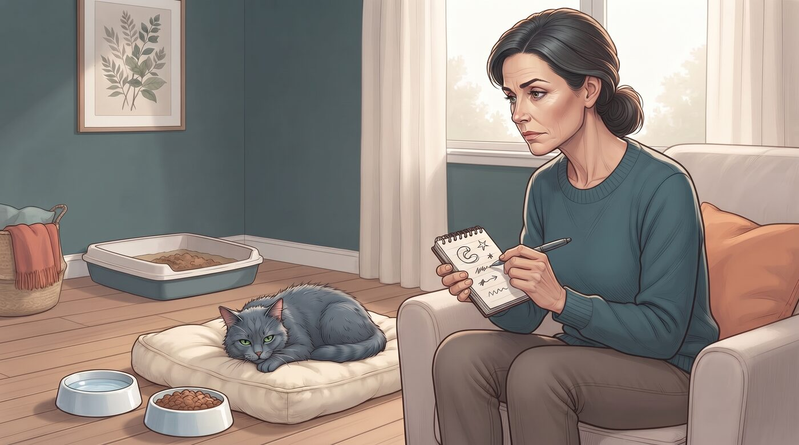
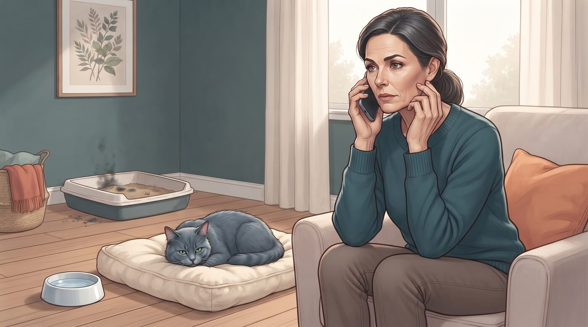
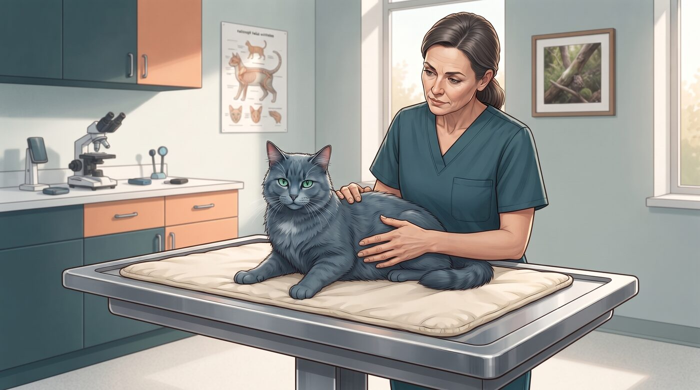
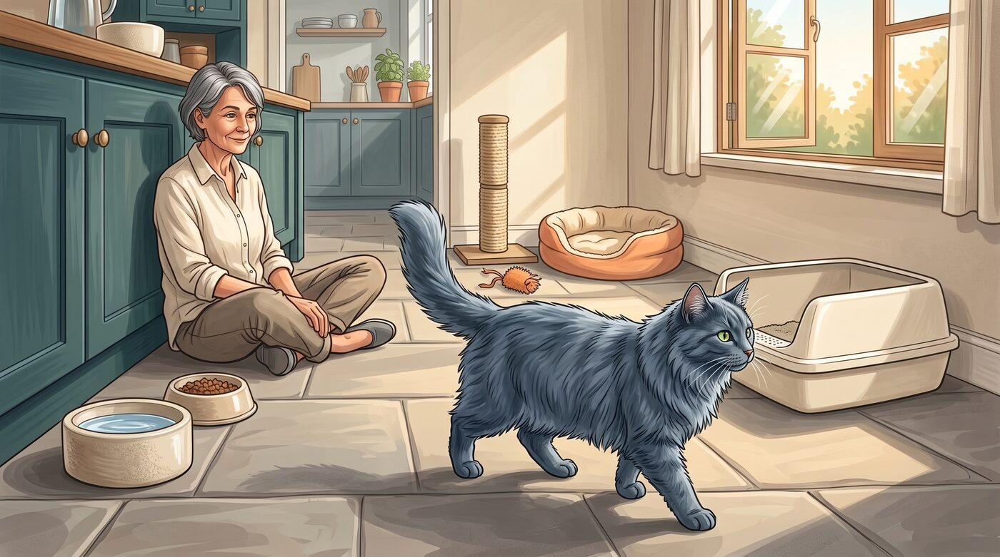
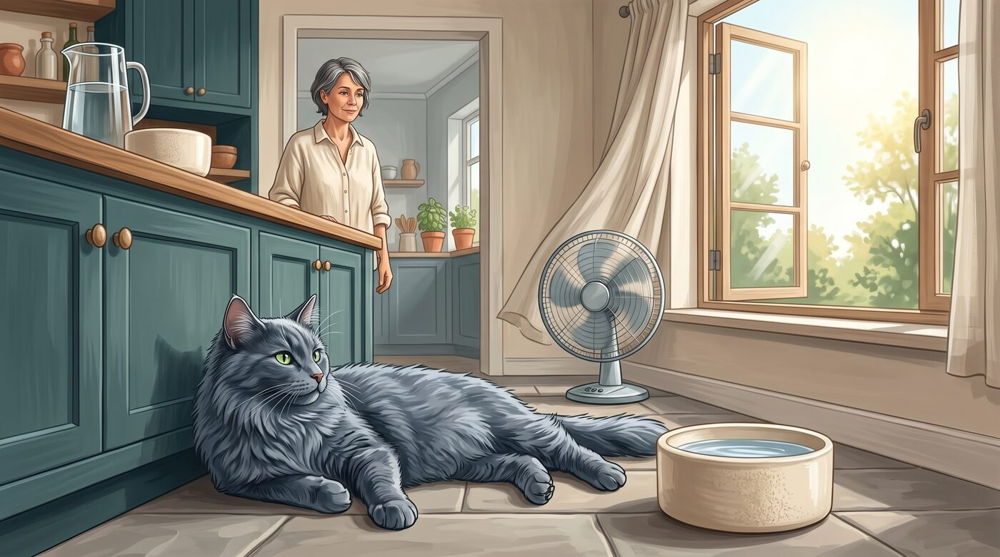
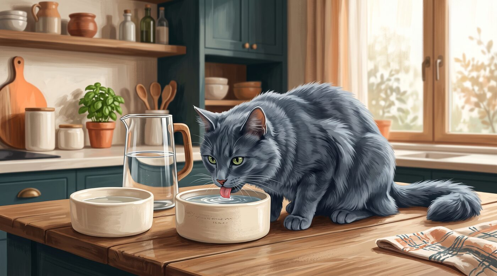

Tem dia que o gato parece uma torneira aberta: bebe, bebe e volta a beber. Em dias quentes, depois de muita brincadeira ou quando a alimentação é só ração seca, isso pode ser apenas uma resposta natural do corpo.
O problema começa quando o aumento da sede não faz sentido com o clima, com a rotina ou com a alimentação. Um gato que passa a beber muito mais água do que costumava pode estar avisando, de forma silenciosa, que algo não vai bem.
A pergunta certa não é "meu gato está bebendo muita água?". É: "isso é uma mudança em relação ao normal dele?". Porque, para gatos, o que importa não é apenas o comportamento isolado, mas a mudança em relação ao padrão daquele animal.
1. Quanto é "muita água" para um gato?
Na prática, a maioria dos tutores não mede a água que o gato consome por dia. E, em condições normais, nem precisa. Um gato saudável que se alimenta bem, urina em volumes esperados e mantém o peso e a energia costuma estar em equilíbrio.
Como referência, gatos adultos em ambiente interno e com alimentação balanceada geralmente consomem algo próximo de 40 a 60 ml de água por quilo de peso por dia, considerando água pura mais a água presente na alimentação. Gatos que comem apenas ração seca tendem a beber mais água na tigela do que gatos que comem alimentação úmida.
Mas números exatos importam menos do que a percepção de mudança. Se você nota que precisa reabastecer o pote de água várias vezes ao dia, que a caixa de areia está muito mais pesada, que há poças de urina maiores ou mais frequentes, ou que o gato passa a procurar torneiras e bebedouros com insistência, isso já é um sinal de que algo mudou.
Uma coisa que eu sempre observo é se a mudança veio de repente ou se foi aumentando aos poucos. Mudanças súbitas costumam merecer atenção mais imediata do que variações lentas e discretas.
2. Quando o aumento de sede pode ser normal

Nem todo aumento de água é motivo para alarme. Gatos podem beber mais em situações específicas, sem que isso indique doença.
É comum observar maior consumo de água:
- Em dias mais quentes ou em ambientes com temperatura elevada
- Depois de períodos de maior atividade física ou brincadeiras intensas
- Quando há mudança de alimentação úmida para ração seca
- Em situações de vômito ou diarreia recentes, como tentativa de compensar perda de líquidos
- Durante o uso de alguns medicamentos que aumentam a sede ou a produção de urina
A VCA explica que aumento de sede e urinação podem estar associados a diversas doenças, mas também reconhece que fatores ambientais, dieta e medicamentos podem influenciar o consumo de água.
Se o aumento da sede tem uma explicação clara, é recente e o gato segue bem — comendo, brincando, usando a caixa de areia e sem outros sinais — você pode observar por um curto período, mantendo água fresca à vontade e monitorando a evolução.
3. O que observar além da água

O aumento da sede raramente vem sozinho quando há um problema de saúde. Por isso, eu não olharia apenas para o pote de água. O conjunto da rotina conta mais.
Preste atenção em:
- Volume e frequência de urina: a caixa de areia está mais pesada, com poças maiores ou em maior quantidade?
- Apetite: o gato está comendo mais, menos ou mantendo o padrão?
- Peso: há perda de peso perceptível, mesmo com bom apetite?
- Vômitos ou diarreia: episódios recentes ou recorrentes?
- Pelagem e aspecto geral: o pelo está mais áspero, opaco ou mal cuidado?
- Nível de energia: o gato está mais quieto, mais agitado ou diferente do habitual?
A Cornell Feline Health Center lista doença renal crônica como a mais comum em gatos idosos e aponta aumento de sede e urinação como sinais clínicos precoces.
Esses sinais não servem para você diagnosticar em casa. Servem para você perceber que há algo diferente e levar essa informação ao veterinário com mais clareza.
4. Causas comuns de aumento de sede em gatos

Quando o aumento da sede é persistente e não tem explicação ambiental ou alimentar, as causas mais frequentes são doenças que afetam o equilíbrio de água e eletrólitos no organismo.
Entre as condições mais comuns em gatos estão:
- Doença renal crônica: os rins perdem capacidade de concentrar a urina, o gato urina mais e bebe mais para compensar. É uma das doenças mais frequentes em gatos mais velhos.
- Diabetes mellitus: o excesso de glicose no sangue "puxa" água para a urina, aumentando o volume urinário e a sede. Pode vir acompanhado de perda de peso e aumento de apetite.
- Hipertireoidismo: comum em gatos de meia-idade e idosos, o excesso de hormônio tireoidiano acelera o metabolismo e pode levar a aumento de sede, urinação, apetite e perda de peso.
- Infecções urinárias e doenças do trato urinário: podem alterar o padrão de urinação e, em alguns casos, aumentar a ingestão de água.
- Doenças hepáticas, alterações de cálcio e outras condições metabólicas: também podem interferir no balanço hídrico.
A VCA reforça que aumento de sede e urinação está associado a diversas doenças, incluindo distúrbios renais, hormonais, hepáticos, alguns tipos de câncer, uso de medicamentos e desequilíbrios eletrolíticos.
Isso não significa que todo gato que bebe muita água tenha uma dessas doenças. Significa que, quando a mudança é persistente, essas são as principais possibilidades que o veterinário vai considerar.
5. Quando a mudança merece atenção rápida

A duração e a intensidade da mudança ajudam a definir a urgência. Um aumento leve e passageiro, com explicação clara, pode ser observado. Já um aumento acentuado, repentino ou acompanhado de outros sinais merece avaliação mais rápida.
Procure orientação veterinária com prioridade se:
- O aumento da sede surgiu de forma súbita e acentuada
- A caixa de areia está visivelmente mais pesada, com poças maiores ou em maior número
- Há perda de peso, mudança no apetite ou vômitos
- O gato parece mais quieto, fraco ou diferente do habitual
- Existem outros sinais, como mau hálito, pelagem ruim, diarreia ou alterações no comportamento
Fontes de triagem veterinária indicam que aumento de sede e urinação em gatos frequentemente sinaliza condições como doença renal, diabetes ou hipertireoidismo e recomendam avaliação veterinária dentro de 24 a 48 horas quando esses sinais são evidentes.
Não espere semanas para ver se "melhora sozinho". Gatos tendem a esconder sinais de doença, e quando o tutor percebe, o problema já pode estar instalado há algum tempo.
6. Sinais de alerta que acompanham a sede excessiva

Alguns sinais, quando presentes junto com o aumento da sede, mudam completamente a urgência. Eles indicam que o organismo do gato está sob estresse e precisa de avaliação profissional.
Fique especialmente atento se, além de beber muita água, seu gato apresentar:
- Perda de peso perceptível, mesmo com bom apetite
- Aumento exagerado do apetite ou, ao contrário, falta de interesse por comida
- Vômitos repetidos ou diarreia
- Pelagem áspera, opaca e mal cuidada
- Apatia, fraqueza ou mudança importante no nível de atividade
- Hálito diferente, com odor forte ou adocicado
- Urina em volumes muito grandes, poças visíveis ou caixa de areia constantemente encharcada
- Tentativas frequentes de urinar com pouco resultado, dor ou esforço
A VCA destaca que doenças como diabetes, hipertireoidismo e doença renal podem causar aumento de sede e urinação acompanhados de perda de peso, alterações de apetite e mudanças no aspecto geral.
Se o gato está bebendo muita água e também vomitando, a situação pode ser ainda mais urgente. Materiais de triagem indicam que essa combinação pode sinalizar estresse dos sistemas internos e recomendam avaliação veterinária rápida.
7. Como preparar a consulta veterinária

Se você percebeu que o gato está bebendo muita água, não tente restringir o acesso à água em casa. A sede aumentada é um sintoma, não a causa. Cortar a água pode piorar o quadro, especialmente se houver desidratação ou doença renal.
Antes da consulta, tente reunir informações que ajudem o veterinário:
- Quando começou a mudança e se foi súbita ou gradual
- Como está o apetite, o peso e o nível de energia
- Quantas vezes a caixa de areia está sendo trocada e como está o aspecto da urina
- Se há vômitos, diarreia ou outros sinais
- Qual é a alimentação atual (seca, úmida, mista) e se houve mudança recente
- Se o gato toma algum medicamento ou suplemento
O veterinário poderá realizar exame físico, avaliar hidratação, peso e condição geral, e solicitar exames como hemograma, bioquímica, urina, dosagem de hormônios tireoidianos e, se necessário, exames de imagem.
O objetivo não é assustar, mas agir cedo. Muitas dessas condições têm manejo mais eficaz quando identificadas em fases iniciais. Um gato com doença renal, por exemplo, pode ter a qualidade e o tempo de vida significativamente aumentados com diagnóstico e acompanhamento precoces.
Um sintoma silencioso que merece atenção
Um gato que bebe muita água pode estar apenas se adaptando ao calor, à alimentação ou a uma rotina diferente. Mas quando a mudança é persistente, acentuada ou vem acompanhada de outros sinais, ela deixa de ser apenas "gato bebendo água" e vira um convite para investigar.
Este conteúdo é educativo e não substitui uma avaliação veterinária. Se houver mudança súbita ou persistente no consumo de água, urinação, apetite, peso, vômitos, diarreia ou outros sinais de saúde do seu gato, procure um médico-veterinário.